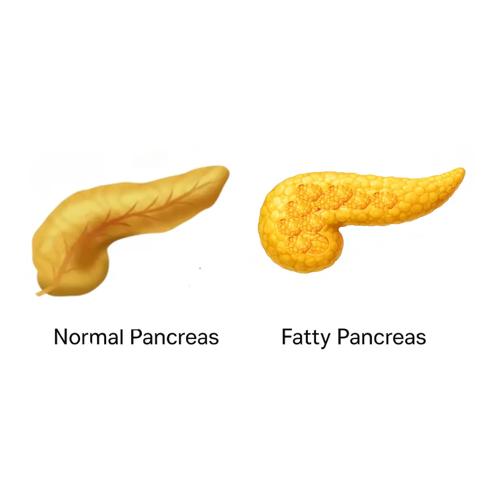
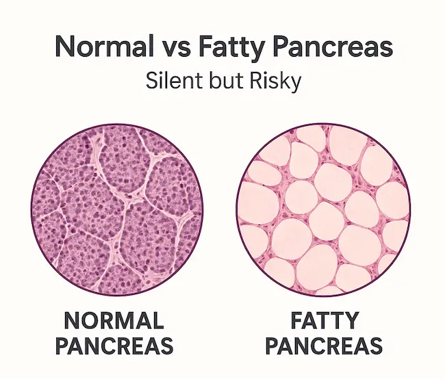
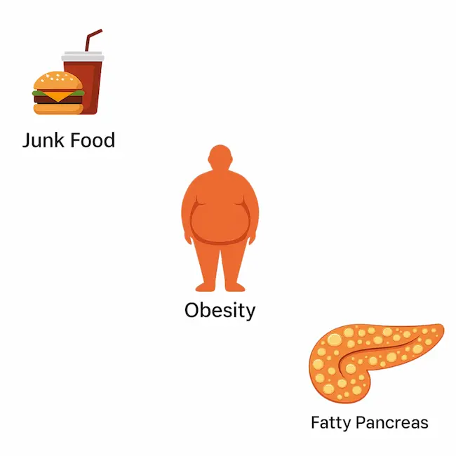
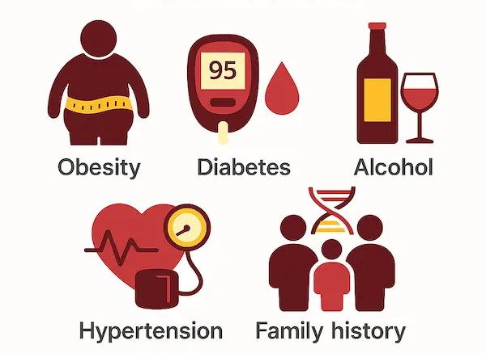
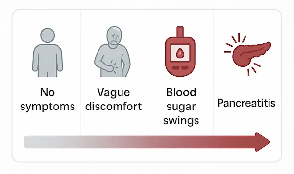
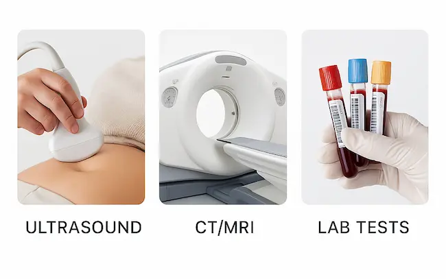
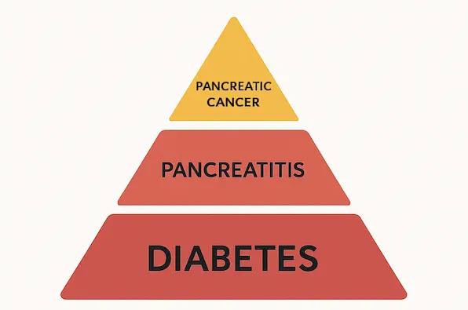

Most people have heard of fatty liver disease, but did you know fat can also build up inside your pancreas? This is called fatty pancreas or pancreatic steatosis.
This is called fatty pancreas or pancreatic steatosis. For many, it causes no obvious symptoms at first — which is why it’s often called a silent condition. But ignoring it can lead to serious health risks, including diabetes, pancreatitis, and even pancreatic cancer in long-standing cases.
What is a Fatty Pancreas?
Your pancreas sits deep in the abdomen and has two main jobs:
• Producing digestive enzymes that help break down food
• Releasing hormones like insulin that control blood sugar
When fat accumulates inside this organ, it can interfere with both. Doctors often find fatty pancreas together with fatty liver, since both conditions share common risk factors.

Why Does Fat Build Up in the Pancreas?
Fatty pancreas is usually the result of metabolic and lifestyle factors rather than a single cause. Risk factors include:
• Obesity or weight gain around the belly
• Diets high in fried, processed, or sugary foods
• Alcohol overuse
• Lack of exercise
• Type 2 diabetes and insulin resistance
• Fatty liver disease (they often coexist)
• Aging and slowed metabolism

Who is at Risk?
You may have a higher chance of developing fatty pancreas if you:
• Struggle with weight gain or central obesity
• Have type 2 diabetes
• Have high cholesterol or triglycerides
• Drink alcohol regularly
• Have high blood pressure
• Have a family history of metabolic diseases

Symptoms – Why It’s Silent
In the early stages, fatty pancreas is usually asymptomatic. Most cases are discovered by accident on an ultrasound or CT scan.
When symptoms do occur, they may include:
• Dull upper abdominal discomfort
• Nausea, bloating, indigestion
• Sudden blood sugar fluctuations
• Fatigue or weakness
• Episodes of pancreatitis (in some cases)

How is it Diagnosed?
• Ultrasound → First-line, often shows fatty changes
• CT or MRI → Detailed view of pancreatic tissue
• MRCP → Evaluates pancreatic and bile ducts
• Blood tests → Check sugar, cholesterol, triglycerides, enzymes

Can it be Treated?
There’s no single pill for fatty pancreas. But it can often be stabilized — and sometimes reversed — with lifestyle changes:
• Lose weight gradually with balanced nutrition
• Eat more fruits, vegetables, whole grains, and lean proteins
• Avoid fried, processed, and sugary foods
• Exercise regularly (30–40 minutes most days)
• Limit or avoid alcohol
• Control diabetes, cholesterol, and blood pressure
• Regular check-ups with a gastroenterologist
Why It Matters – The Risks of Ignoring It
A fatty pancreas may look harmless, but evidence shows it can increase the risk of:
• Type 2 diabetes – studies link pancreatic fat to reduced insulin secretion
• Pancreatitis – fat deposits may worsen inflammation
• Pancreatic cancer – long-standing fatty pancreas may raise cancer risk

Key Takeaway
Fatty pancreas is silent but not harmless.
With early detection, healthy habits, and medical monitoring, you can protect your pancreas and lower your risk of serious complications.
Have a question this article does not answer?
Send us your reports. A specialist reviews them before you travel, so the first visit begins with a plan rather than a repeat test.